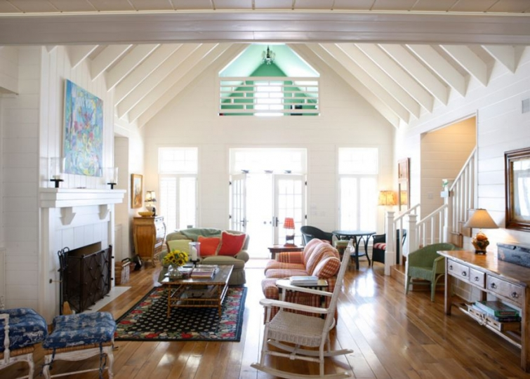
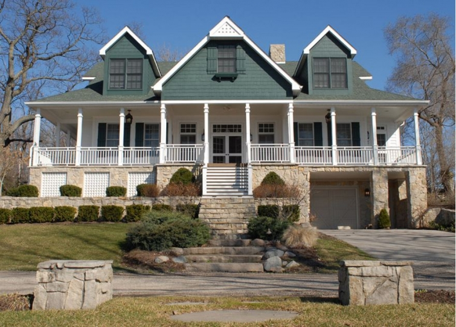
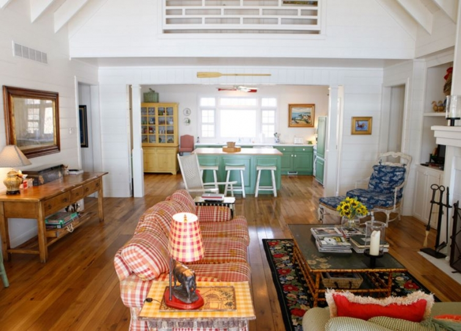

.png)
.PNG)
.PNG)
.PNG)
.PNG)
.PNG)
.JPG)
.JPG)
.PNG)
.PNG)


source
There must be something about handbag designers that also makes them good at interior design.  Take for example, Kay Stanley Рthe Spartina 449 handbag designer who had the gorgeous homes we looked at here.  Today I want you to see the colorful homes of Barbara Bradley Baekgaard, one of the co-founders of Vera Bradley, the famous handbag and accessories company.  We looked at an inn  she decorated here, but she also has a couple of lake homes and a beach house that I think you will enjoy seeing.  Get ready for color and pattern!
source
This first one is known as Green Gables.  It is her Lake Gage, Indiana residence that she purchased in 2005.  I keep thinking it was featured loooong ago in either Country Living, Country Home, or Midwest Living, but I have not been able to locate anything from a long-ago article.  Do any of you remember that?
The living room in Green Gables is a super cheery mix of plaid and toile and bright primary colors set off against clean white walls.  I remember wanting that black floral rug from Vera Bradley when it first came on the market.
source
The plank walls and vaulted ceiling really add charm to this room (and of course I want that green wicker chair. üôÇ )
(Click on the links below the photo to take a peek at the bedrooms in it.)
She also has another home on Lake Gage.
This smaller one is appropriately named The Getaway.
The yellow in her living room really make it a happy space Р from that yellow print on the chair to the yellow toile wallpaper.
Here is the view from the kitchen into the living room. ¬†She brings out the yellow even more by contrasting it with blue in the living room and the dining area. ¬†Notice all the many different patterns in this space…a stripe, toile, plaid, and a floral.
The guest bedroom in The Getaway is dressed in a blue print paper while the linens have a mix of patterns in that signature blue.  This room reminds me of one of the bedrooms in her former Inn by the Sea in Seaside, Florida.
While the living room area was yellow with blue accents, this blue bedroom has the reverse Рblue print walls accented with a yellow plaid window seat. (And again, click on the link below the photo to see more of the interiors from The Getaway.)
Finally, I want you to see her home in Seaside, Florida.
This one is named Birdie’s Cottage.
Designed by Mockbee/Coker Architects, it has some very unusual exterior details.
Because of the pastel colors in the living room,  I thought at first that this home was decorated in a more subdued style than her other homes.
But when I saw this room with its bold buffalo check wallpaper, I decided Birdie’s Cottage was not so “subdued.” üôÇ
This small shot is the only one I could find of its kitchen. üôÅ
Painted wood walls, sweet florals, and a couple of bird prints add to the charm of this bedroom .
Don’t you love the red checked shower curtain in the master bath?
And now to the porch – my favorite of all of her spaces. üôÇ
This particular photo came from a blogger who was able to visit the house when it was open for touring. ¬†Goodness, wouldn’t you have loved to have been there for that!
And this is from a Country Living magazine article that featured the cottage.
Notice how the fabric (Thibaut’s Providence pattern) repeats in the design of the porch swing cushion and the wallpaper in the bedroom beyond it.

Here is a video of an interview with Barbara filmed on that very porch in Seaside. üôÇ
I love how she has incorporated the bird theme throughout Birdie’s cottage. ¬†The brown print there on the porch and in the bedroom has a bird design. ¬†She has framed bird prints in the living room and bedroom. ¬†The pottery in the kitchen features birds, and I would bet they appear in other accents in the house too.
And that wraps up the homes of Barbara Bradley Baekgaard. ¬†I hope you have enjoyed seeing these colorful spaces in both of the lake houses and in her cute Seaside beach house. ¬†And you better believe the next time we make a trip to Seaside, I am going to be looking for Birdie’s Cottage. üôÇ
Until next time…


.PNG)
Kelly,
I loved this whole post, especially the Birdie Cottage. I bought a couple of old chairs @ a thrift store that look a little like the four on the porch of that cottage. I love the big checks cushions so I may just have to work on those chairs and get some big cushions made for them. The video introduction was great. Don’t you just love a story where someone takes $250 and builds a successful brand from it. She seems so down to earth. Have a good weekend.
DiAnne
Thanks for sharing these Kelly. I love the porches especially and the cute bedrooms set out with lots of beds or bunks. I imagine extended families holidaying together and then all the children having nightly slumber parties after a day playing on the beach! üôÇ I’d love a home with a room like this …maybe for grandchildren one day!! Not that any of our present bedrooms are big enough and I don’t envisage moving anytime soon! A girl can dream!
Hope you’re having a good weekend. Our weather gone from heavy rain that caused the river to flood to dull and foggy ..then today it was beautiful, sunny and warm. Felt like Spring!
Rosemary
Hi Kelly! Thanks for sharing this beautiful house! I’m always impressed by your knowledge in house design and designers! I love the porch too. Porch houses are the best! üôÇ
Wish you a great weekend,
Claire
———————————————————————-
Oh you are too sweet Claire. üôÇ I agree that porch houses are the best! If we were looking to build another house or buy one, a porch would be on the “must have” list.
I hope you have a wonderful weekend too!
Kelly
Loved the blue bedroom ( blue has always been my favorite color). Blue is so restful in a bedroom. Also the red claw foot bathtub ( had one of those types of tubs when I was a child) but I thought it wasn’t pretty until I found out most of my friends had only a large galvanized tub that had to have hot boiling water added to cold water and carried to fill! That was the way it was the early 50’s back in KY for us BabyBoomers. We were blessed to have an indoor bathroom and running water! Loved seeing all these and hopefully one day will make it up to that part of the state. Seems like a lot of the worse weather comes ashore or across that part of the Panhandle. Hope the spring storms are kind to those folks!
———————————————————————–
That blue one was so pretty. Oh my goodness at your bath tub story Louvina! I don’t think I would love my long soaks as much if they were in a galvanized tub with water you had to fetch and carry. You must have been high society to have that claw foot tub! LOL
We had looked at Seaside for a trip this weekend, but the weather forecast killed those plans. I hope they have not had the flooding rain that this storm has brought to areas before them.
Enjoy your weekend!
Kelly
Kelly, what a beautiful post (as always!). I have a very small folder of magazine pages that have inspired me over the years. They are so special, there are only about 20 pages! One of them is the living room at Green Gables. I just looked it up and it was from Cottage Style Magazine. I am sorry that there isn’t a date on the pages I have. I can’t tell you how often I have gazed at that photo. Thank you so much for this post with the rest of the story. I do so appreciate your research.
———————————————————————-
Thank you so much for the info Michele! At least I know I wasn’t crazy thinking I had seen it in a magazine. LOL I’ve save a number of magazine issues through the years, but I only have 1 issue of Cottage Style (and unfortunately it is not that one.) I am so glad you saw the post here since you love that room at Green Gables. Hope you have a great weekend!
Kelly
I love the Getaway the best as far as decor goes. The Birdies Cottage is cute too. I’m not as fond of the Green Gables, but that’s just personal taste. They all are done well. I love Very Bradley items. I have a great back pack and make up bag by them. It’s always been a great, quality product.
You find the best things for us!
xo,
Karen
———————————————————————
I would bet that they have updated Green Gables in recent years. Those photos were from a number of years ago. Birdie’s is more recent, and I am sure that is part of why I liked it more. Lucky you to own those Vera pieces! Our daughter has a few but I need to get some for myself. üôÇ
BTW…loved your mantel styling in your post today. Beautiful job!
Kelly
Love these homes!!! I saw some of the Seaside Inn several years ago in a magazine, can’t remember which one right now. Really enjoyed the video clip!!! Thanks for sharing that and so happy Vera Bradley came to be and I now have pretty luggage!!!
——————————————————————–
Aren’t they cute Linda?! I’m so glad you liked the post and the video! And it sounds like you are enjoying your Vera Bradley pieces. üôÇ
Have a great weekend!
Kelly
The green wicker chair looks to be a Lloyd Loom chair which is not technically ‘wicker’ but kraft paper twisted around wire. It also occurred to me that multiple patterns in a room look great if the room is big enough, my small lounge room couldn’t take such a diversity of pattern would that be right? I really look forward to receiving your blog in my email, I love your home and have a love of red also but I also like your views of other houses and your trips around your beautiful country. Thank you.
———————————————————————-
Thanks for the info on the Lloyd Loom chair. I love that green color! You are right on the large room. I don’t think you could mix patterns to the extent that they are in the Green Gables House (especially the plaid sofa) but if you balance the mix with a large expanse of solid, it should be fine in a small space. For example, use a solid sofa, but mix up the patterns in your throw pillows and add in a patterned chair (in the same colorway.) That would work. I am SO not brave with mixing patterns, and I have a lot to learn in that area. Thank you for your sweet comment on our house and on the blog. Hope you have a good weekend in store for you!
Kelly
I love Vera Bradley and was happy to see this post. I, too will be looking for Birdie Cottage the next time I visit Seaside. Thanks so much for your wonderful blog! I look forward to each of your posts!
———————————————————————-
Thank you so much Caroline. I bet there are plenty of us checking out Birdie’s cottage when we are in Seaside! (Poor woman…no privacy! LOL) Thank you so much for reading the post and taking time to comment. Hope your weekend is a good one!
Kelly
Love! So many likes, I can’t name all of them. But I do love the first house, with the blue and yellow. I love Seaside, but there was too much furniture in those rooms for me.
My daughter got me a Vera Bradley tote bag many years ago for my birthday, and I say I need to get something new, but just can’t stop using it. I get so many compliments on it, even if it is showing its wear now. Love their things!
———————————————————————-
I’m so happy you liked all the houses Marianne! They are certainly colorful aren’t they?
That is wonderful that you have loved your Vera tote for many years. They last and last, and the fact that they can be washed, just adds to their worth. But there is nothing wrong with getting a new one. üôÇ I bet you would enjoy using it too!
Kelly
Thanks for the time you spent in researching this post, Kelly. It was a treat on this sunny afternoon. I enjoyed Birdie Cottage the most. I was thinking Southern Lady did a feature on one of the homes one time. I could be wrong though. I enjoyed the video, and yes, I love the red checked shower curtain. As a matter of fact, I like that whole room, especially if I could take a plunge in the tub on a nice getaway!
Sherry
————————————————————————
You are most welcome Sherry. Like you, Birdie’s is my favorite too. I wish I could remember which magazine featured that big lake house. I wasn’t reading Southern Lady back then, so I do not think it was that one. I am thinking they did a feature on the inn..but I could be wrong.
Too funny about that bathroom!
Hope you have a fun weekend in store! üôÇ
Kelly
Hi Kelly,
What fun to see all those homes! While I enjoy seeing all the colors in the home of others, that much color would be a bit much for me. I did love the use of yellow and blue in the cottage though. Her front porch is so inviting too! Thanks for sharing these homes with us!
——————————————————————–
Barbara Bradley Baekgaard must be fearless in her use of color and pattern. You can see that in her handbags too, right? üôÇ Like you, I am not quite that bold. But wasn’t that blue and yellow pretty? Loved it too. üôÇ
Kelly
These were so fun to see! I would love to be more bold with color and patterns. I recently decided to paint our family room with beamed ceilings all white. The living room at Green Gables makes me think I made the right decision. Lovely!
———————————————————————-
I bet your living room is just lovely! That family room with the beamed ceiling all painted white looks like a happy space. It does take boldness to mix up colors and patterns. I can handle the color side. It’s the mixing of patterns where I am chicken. We both need to get out of our comfort zones!
Kelly
Great post. Birdie Cottage is to die for — ALL of Barbara Baekgaard’s houses are to die for, and I enjoyed that video introduction to her. Thanks for the wonderful mental getaway, so perfect for the springlike weather we’re having in central AL. Hope GA is getting the same!
——————————————————————–
Ruth, not only is Birdie Cottage cute, but it is also in a fabulous location. Seaside is one of my happy places. üôÇ
Yes, spring seems to be taking residence here too. I am glad you are enjoying it! Thank you for visiting the blog and taking time to leave your sweet comment. üôÇ
Kelly